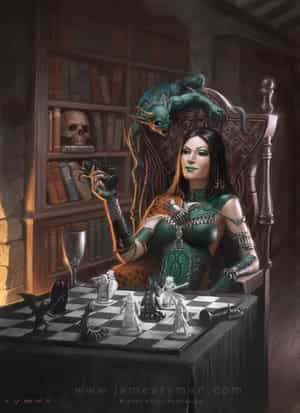
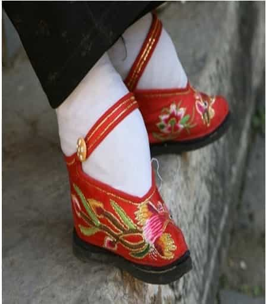
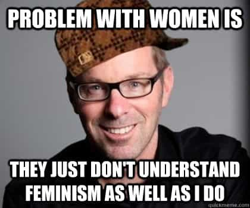

< < < Back
4 Red Pill Concepts You Need To Understand – Return Of Kings
This article begins to serve as an introduction to the manosphere and the Red Pill. It is for men who have been struggling with their wives and girlfriends, or with their government or employer, and feel they need to be turned toward human flourishing and happiness. Share this article with them.
She Is The Villain

Many men think of women as Princess Zelda. They want a nice girl to rescue and settle down with. Some even think they rescued Zelda, and now it will be nothing but white picket fences and greener pastures. Some are just wondering why their Princess is such a bitch sometimes. Achtung! That woman you want is no Zelda. She is the villain. She is the enemy in this game. Her nature must be confronted and she must be overcome. Her nature will destroy you and even herself if you do not defeat the evil forces involved within her very being.
Solipsism & Celebrity
Take a moment to consider Hollywood celebrities. They are among the most degenerate, out-of-touch, clueless failures in America. They’re famously drug addicted, narcissistic, ignorant, presumptuous, privileged, and often secretly miserable. Adam Corolla hilariously said that—if you hate her—the worst thing you could wish on Kathy Griffin is a long life. Most celebrities make it through their fame and fortune with grace, but there is no group of people more notorious for their untimely death or social disorderliness—-other than recent lottery winners, perhaps.
This grotesque psyche is what plagues a woman, especially the woman who is generally desirable to men. She is a celebrity. Everything she posts on Facebook is liked and fawned over. Every mistake in her life results in a bailout of some kind. There is literally nothing she can do to fail because there is always a government program or a caring man waiting to save her. Every voice cries out to her that she is good, wonderful, great, no matter what her faults are. She is taught to esteem herself no matter what, and anyone who speaks out against a woman’s self-esteem is attacked viciously and labeled a hateful person. Women experience a level of privilege the average schmoe has no concept of. She bats her eyelashes and gets a ride, she stands next to her smoking automobile and gets a free roadside mechanic. She carries a heavy load through the shopping mall and gets a willing assistant to take it off her hands.
I admit that this phenomenon is on the decline in a post-Christian society, and women are being treated more and more like men these days, which is probably not what they bargained for when they overthrew the prevailing order. But the privilege they experience is still life-altering for them, and still officially institutionalized by the government for you.
This privilege does a number on a person’s psyche. Solipsism is a philosophical term meaning that a person does not agree that other persons exist outside of themselves. This philosophy generally describes a desirable woman’s psyche in our Western culture—perhaps in our species. The phrase Not All Women Are Like (NAWALT) that has been immortalized and mocked in the manosphere.
Provide your favorite links to female villainy and NAWALT.
Hypergamy
Special attention must be paid to a woman’s programmed routine. She is programmed to excel in a certain way that a man is often unable to realize. Men excel by accomplishing things for themselves and their own, and are willing to couple with a younger, dumber, poorer woman without shame. Women are not like this.
Women primarily want to associate themselves with others who accomplish things and secure the social status and provisions from a richer, older, more powerful, higher status man. This is why women generally marry older men, who are often further in the career, further in maturity, further in the social order, stronger and wiser. A woman generally does not respect a man who is dumber, poorer, weaker, and less powerful than her. She may take one on as a mom or as a nun—but a woman intimately associated with a lower status man will automatically resent him and treat him disrespectfully, and she will not be able to quite place her finger on the source of her discontent. Alas, her own nature is elusive to her in our culture, and even attempting to explain it to her may at last be beyond her comprehension or care.
Feminism

Many aspects of a woman’s nature are universal, but some are cultural. Who cares which if they are consistently observed? Not me. But there is some observed truth to these matters. The truth is that women are easily programmed, perhaps more easily than men. Our Western women are currently programmed primarily by liberal feminism.
Feminism is a bizarre, unnatural religion or mythology that claims women were oppressed and need to be liberated. The truth is that nobody ever oppressed a woman by getting on their knees, offering precious gems, begging for unity, and offering her the children she naturally desires. If women were oppressed, men were slaves. If women were nothing but sex objects, men were nothing but ATMs. If women were doomed to motherhood, men were doomed to dying on foreign shores for their countrymen.
Feminism is an insidious theoretical framework that has occupied the highest heights in our culture, reigning over the lectern, the Oval Office, and the Silver Screen with impunity. Almost nobody claims the mantle of “feminist” but almost nobody operates according to anything outside the rules of feminism. Claiming something anti-feminist, like that women should not vote, is absolutely beyond the pale, even though it was universally accepted by every culture in history as incontrovertible. Feminism must be studied and defeated.
White Knights
Although women have great power over the men in their lives, they have almost no power over society as a whole. This is because women are not as strong and smart as men, nor are they willing to take risks over abstract matters of justice and morality. They instead leave this to the men they do control. They enlist willing men to take the risks enforcing feminist morality.
Although they do not accept a code of conduct for all women to follow, they still stubbornly cling to a code of conduct for all men to follow: chivalry. Although they are no lady, no damsel, no princess Zelda, they still expect you to be their prince, their savior, their Link. Any man who does not take on their chivalric duty is shunned by their closest friends and family. When a feminist wants less women to suffer, or to have less responsibility for their foolish actions, they always enlist a man with a gavel, or a man with a badge, or a man with a tax bill to do their bidding. There are many theories as to how and why these men behave the way they do.

Read Next: Passive Game vs Active Game


{kind=link}
{kind=link}
{kind=link}
{kind=link}